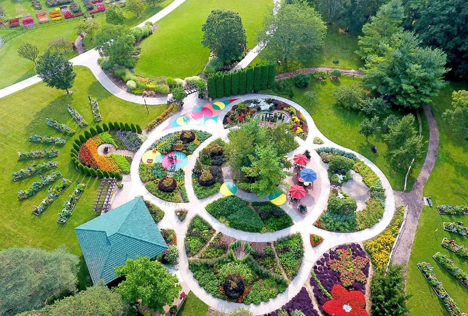
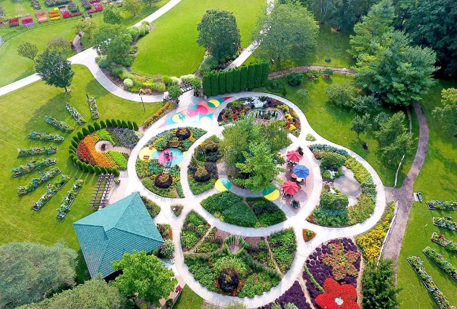
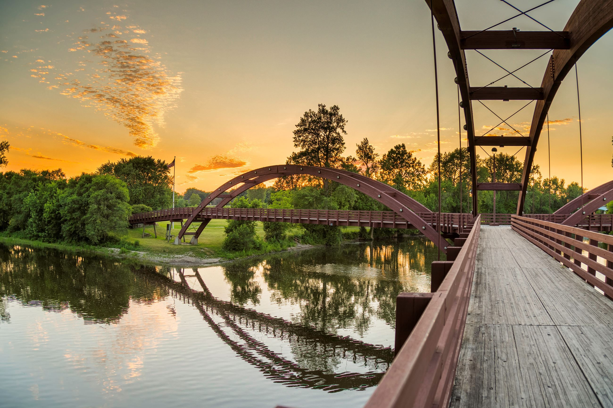
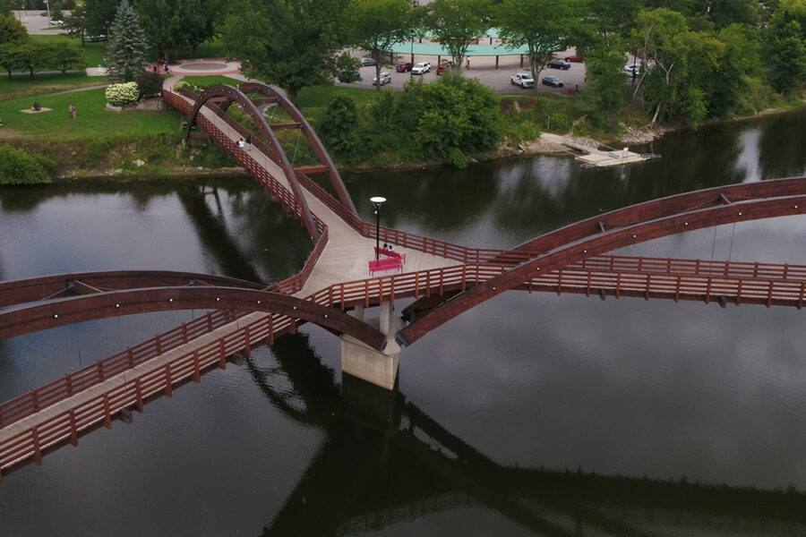
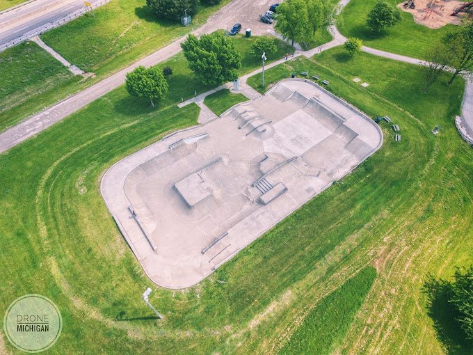
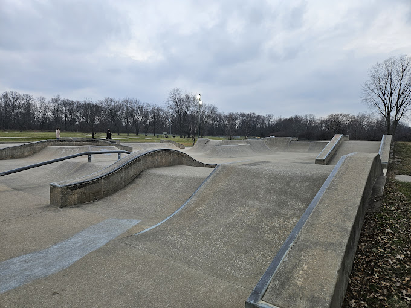
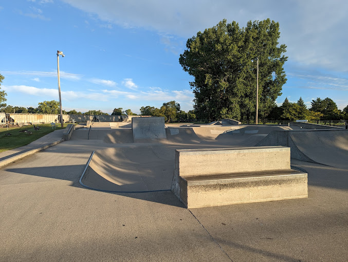
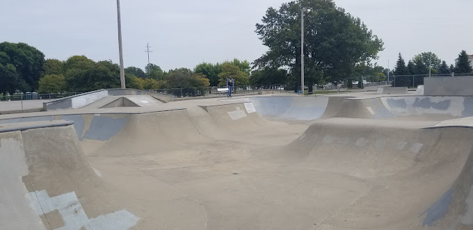
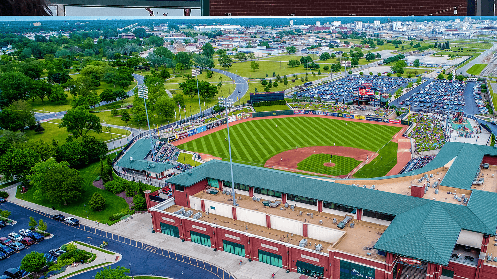
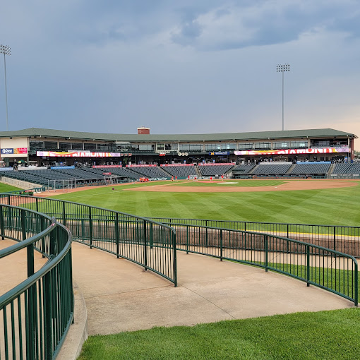

Outdoor Activities
 

1809 Eastman Ave, Midland, MI 48640
Size: 110 Acres
Hours: 9am-8pm, Tuesday - Sundays
closed Monday
Dow Gardens


The Tridge
Chippewasse Park (Downtown Midland)
City of Midland


Midland Skate Park
Chippewasse Park (by tridge)
City of Midland


Bay City Infinity Skate Park
413 Marquette Ave, Bay City, MI 48706
Infite Skate Park

